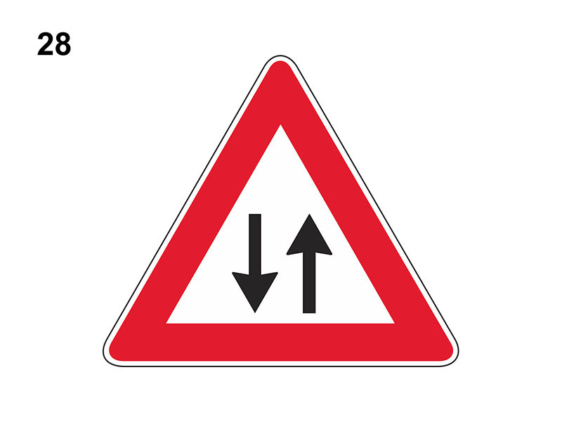

Doppio senso di circolazione

E' un segnale di pericolo che preannuncia (di norma a 150 metri) che una carreggiata a senso unico, diventa a doppio senso di circolazione e quindi si potranno incontrare veicoli che marciano in senso opposto.
Indica quindi che termina il senso unico di circolazione e occorrerà usare maggiore prudenza.
Se a fondo giallo, è posto in presenza di lavori in corso.
Il sorpasso, se consentito, deve essere effettuato con particolare prudenza.
Non è vero che preannuncia un senso unico alternato o il diritto di precedenza nei sensi unici alternati o che impone di dare la precedenza ai veicoli provenienti in senso contrario.
Indica quindi che termina il senso unico di circolazione e occorrerà usare maggiore prudenza.
Se a fondo giallo, è posto in presenza di lavori in corso.
Il sorpasso, se consentito, deve essere effettuato con particolare prudenza.
Non è vero che preannuncia un senso unico alternato o il diritto di precedenza nei sensi unici alternati o che impone di dare la precedenza ai veicoli provenienti in senso contrario.